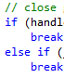

About
Overview
Little Adventure is a game made by Gil Mizrahi as the a final project in Object Oriented Programming 2 class in Hadassah College. the game was written in C++ using Simple Fast Media Library 2.0 Graphics library.
The bigger part of the work on this game was to develop the game's engine while the lesser part was creating the actual game logic and plot. The game took about a month to create.
Plot
Little Adventure tells the story of a young girl who lives in a small town. this girl goes around town, helping her neighbours with whatever they need, be it lost item or lost... well, basically she recovers lost items or pets. but sometimes she gets caught up in dangerous situations that forces her to fight monsters and other enemies.
Engine
Little Adventure's game engine provides a scriptable platform for creating games. the files in the "maps" folder describes each map of the game. each map describes the terrains and objects on the map.
Graphics
The graphics for the game were taken from across the web though slight modifications were applied to some of the graphics. Originally, most of the graphics were designed to be resources for RPG MAKER.